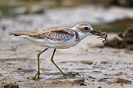
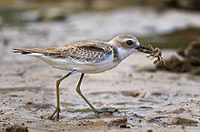

| Greater Sand Plover | |
|---|---|
|  | |
| Conservation status | |
| Binomial name | |
| Charadrius leschenaultii (Lesson, 1826) |
| Greater Sand Plover | |
|---|---|
|  | |
| Conservation status | |
| Binomial name | |
| Charadrius leschenaultii (Lesson, 1826) |
The Greater Sand Plover, Charadrius leschenaultii, is a small wader in the plover family of birds. The spelling is commonly given as "Greater sandplover", but the official British Ornithologists' Union spelling is "Greater sand plover".
It breeds in the semi-deserts of Turkey and eastwards through Central Asia. It nests in a bare ground scrape. This species is strongly migratory, wintering on sandy beaches in east Africa, south Asia and Australasia. It is a rare vagrant in western Europe, where it has been recorded as far west as Great Britain, France and Iceland. It has been spotted twice in the Western Hemisphere, the most recent being on May 14, 2009, in Jacksonville, Florida.[2]
This chunky plover is long-legged and thick-billed. Breeding males have grey backs and white underparts. The breast, forehead and nape are chestnut, and there is a black eye mask. The female is duller, and winter and juvenile birds lack the chestnut, apart from a hint of rufous on the head. Legs are greenish and the bill black.
In all plumages, it is very similar to Lesser Sand Plover, Charadrius mongolus. Separating the species may be straightforward in mixed wintering flocks on an Indian beach, where the difference in size and structure is obvious; it is another thing altogether to identify a lone vagrant to western Europe, where both species are very rare. The problem is compounded in that the Middle Eastern race of the greater sand plover is the most similar to the lesser species.
Its food consists of insects, crustaceans and annelid worms, which are obtained by a run-and-pause technique, rather than the steady probing of some other wader groups.
Its flight call is a soft trill.
Its scientific name commemorates the French botanist Jean Baptiste Leschenault de la Tour.
The Greater Sand Plover is one of the species to which the Agreement on the Conservation of African-Eurasian Migratory Waterbirds (AEWA) applies.

{kind=link}